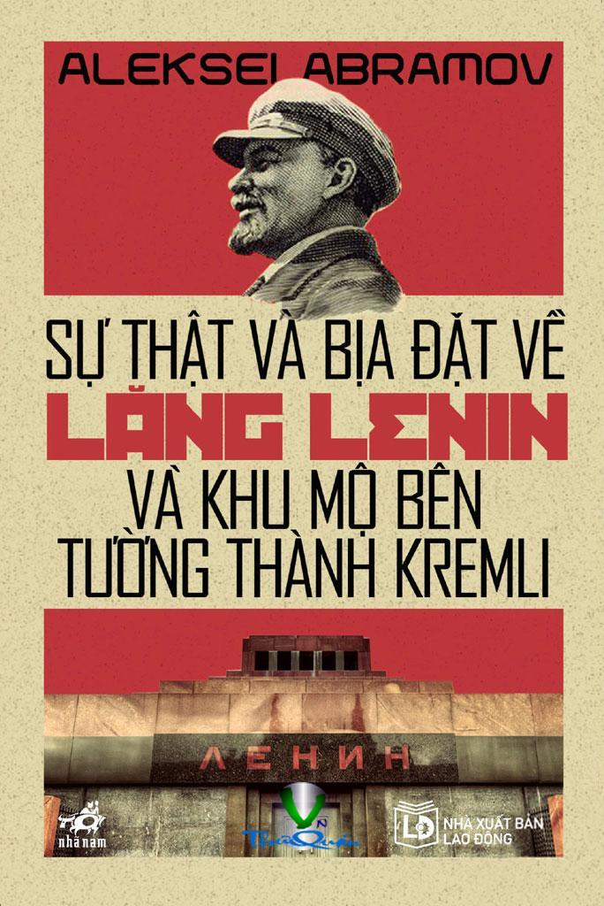

« Back
Sự Thật Và Bịa Đặt Về Lăng Lenin Và Khu Mộ Bên Tường Thành Kremli
By Aleksei Abramov

Phần I. Lịch Sử Lăng Lenin Và Khu Mộ Danh Dự Bên Tường Thành Kremly
Tin Nặng Nghìn Cân
Trên Lưng Hành Khúc Và Tiếng Cười Nức Nở(39)
Lăng Tẩm, Đài Kỷ Niệm, Diễn Đàn
Kỹ Thuật Ướp Xác Hoàn Hảo
Vị Trí Gác Danh Dự Số 1
Lăng Ở Siberia
Cải Táng Stalin
Hàng Mộ Danh Dự Bên Tường Thành Kremli
Trong Thế Giới Của Những Nấm Mộ Không Bao Giờ Tắt Lửa
Bức Tường Của Những Người Bất Tử
Phần II. Ngày Hôm Ấy
“Điều Mà Kolchak Không Làm Nổi Thì Sobchak Cũng Không Làm Nổi”
Quỹ “Lăng V. I. Lenin”
No Pasaran!
Ai Mang Lại Đau Khổ Cho Nước Nga?
Đừng Đánh Nhau Với Những Người Đã Khuất, Mà Hãy Trả Lương Và Trợ Cấp Hưu Trí
Đuma Quốc Gia Trân Trọng Kỷ Niệm Lenin
“Hãy Để Cho Những Người Thân Của Chúng Tôi Được Yên”
Lenin Có Quen Khasbulatov Không?
Thượng Phụ Giáo Chủ Vào Cuộc Chống Lại Chúa Kitô
Phần III. Câu Chuyện Những Khổ Đau Và Vinh Quang Của Chúng Ta
Từ Quảng Trường Đỏ Tiến Thẳng Ra Mặt Trận
Bình Minh Ngày 9 Tháng 5
Lễ Duyệt Binh Chiến Thắng
Tiếng Nói Của Nhân Dân
“Hãy Loại Lăng Ra Khỏi Nghi Lễ Duyệt Binh”
Quay Lưng Lại Với Lịch Sử
Phần Kết
Phụ Lục
Giác Ngộ Hay Mù Quáng?
Trộm Cướp Kho Lưu Trữ
Sự Vô Đạo Đức Không Che Đậy
Đừng Đánh Nhau Với Người Đã Khuất, Hãy Trả Lương Và Trợ Cấp Hưu Trí Cho Những Người Đang Sống
Bức Thư Mật
Chúa Bên Cạnh Ai?
Con Người Có Tâm Hồn Cơ Đốc Giáo
Nước Nga Là Một Quốc Gia Thế Tục
Bất Chấp Hiến Pháp Và Pháp Luật
Đừng Đánh Nhau Với Người Đã Khuất, Hãy Trả Lương Và Trợ Cấp Hưu Trí Cho Những Người Đang Sống
Hãy Ngăn Chặn Tội Ác
Những Kẻ Kích Động Xúi Bẩy
Phụ Lục Ảnh
Chú Thích